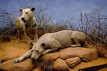

Conservation
The lion is listed as Vulnerable on the IUCN Red List. The Indian population is listed on CITES Appendix I and the African population on CITES Appendix II.[2]
In Africa
Several large and well-managed protected areas in Africa host large lion populations. Where an infrastructure for wildlife tourism has been developed, cash revenue for park management and local communities is a strong incentive for lion conservation. Most lions now live in East and Southern Africa; their numbers are rapidly decreasing, and fell by an estimated 30–50% in the late half of the 20th century. Primary causes of the decline include disease and human interference. In 1975, it was estimated that since the 1950s, lion numbers had decreased by half to 200,000 or fewer. Estimates of the African lion population range between 16,500 and 47,000 living in the wild in 2002–2004.
In the Republic of the Congo, Odzala-Kokoua National Park was considered a lion stronghold in the 1990s. By 2014, no lions were recorded in the protected area so the population is considered locally extinct. The West African lion population is isolated from the one in Central Africa, with little or no exchange of breeding individuals. In 2015, it was estimated that this population consists of about 400 animals, including fewer than 250 mature individuals. They persist in three protected areas in the region, mostly in one population in the W A P protected area complex, shared by Benin, Burkina Faso and Niger. This population is listed as Critically Endangered. Field surveys in the WAP ecosystem revealed that lion occupancy is lowest in the W National Park, and higher in areas with permanent staff and thus better protection.
A population occurs in Cameroon's Waza National Park, where between approximately 14 and 21 animals persisted as of 2009. In addition, 50 to 150 lions are estimated to be present in Burkina Faso's Arly-Singou ecosystem.In 2015, an adult male lion and a female lion were sighted in Ghana's Mole National Park. These were the first sightings of lions in the country in 39 years.In the same year, a population of up to 200 lions that was previously thought to have been extirpated was filmed in the Alatash National Park, Ethiopia, close to the Sudanese border.
In 2005, Lion Conservation Strategies were developed for West and Central Africa, and or East and Southern Africa. The strategies seek to maintain suitable habitat, ensure a sufficient wild prey base for lions, reduce factors that lead to further fragmentation of populations, and make lion–human coexistence sustainable. Lion depredation on livestock is significantly reduced in areas where herders keep livestock in improved enclosures. Such measures contribute to mitigating human–lion conflict.
In Asia

The last refuge of the Asiatic lion population is the 1,412 km (545 sq mi) Gir National Park and surrounding areas in the region of Saurashtra or Kathiawar Peninsula in Gujarat State, India. The population has risen from approximately 180 lions in 1974 to about 400 in 2010. It is geographically isolated, which can lead to inbreeding and reduced genetic diversity. Since 2008, the Asiatic lion has been listed as Endangered on the IUCN Red List.By 2015, the population had grown to 523 individuals inhabiting an area of 7,000 km (2,700 sq mi) in Saurashtra. The Asiatic Lion Census conducted in 2017 recorded about 650 individuals.
The presence of numerous human habitations close to the National Park results in conflict between lions, local people and their livestock. Some consider the presence of lions a benefit, as they keep populations of crop damaging herbivores in check. The establishment of a second, independent Asiatic lion population in Kuno Wildlife Sanctuary, located in Madhya Pradesh was planned but in 2017, the Asiatic Lion Reintroduction Project seemed unlikely to be implemented.
Captive breeding

Lions imported to Europe before the middle of the 19th century were possibly foremost Barbary lions from North Africa, or Cape lions from Southern Africa. Another 11 animals thought to be Barbary lions kept in Addis Ababa Zoo are descendants of animals owned by Emperor Haile Selassie. WildLink International in collaboration with Oxford University launched an ambitious International Barbary Lion Project with the aim of identifying and breeding Barbary lions in captivity for eventual reintroduction into a national park in the Atlas Mountains of Morocco. However, a genetic analysis showed that the captive lions at Addis Ababa Zoo were not Barbary lions, but rather closely related to wild lions in Chad and Cameroon.
In 1982, the Association of Zoos and Aquariums started a Species Survival Plan for the Asiatic lion to increase its chances of survival. In 1987, it was found that most lions in North American zoos were hybrids between African and Asiatic lions. Breeding programs need to note origins of the participating animals to avoid cross-breeding different subspecies and thus reducing their conservation value. Captive breeding of lions was halted to eliminate individuals of unknown origin and pedigree. Wild-born lions were imported to American zoos from Africa between 1989 and 1995. Breeding was continued in 1998 in the frame of an African lion Species Survival Plan.
About 77% of the captive lions registered in the International Species Information System in 2006 were of unknown origin; these animals might have carried genes that are extinct in the wild and may therefore be important to the maintenance of the overall genetic variability of the lion.
Interactions with humans
In zoos and circuses


Lions are part of a group of exotic animals that have been central to zoo exhibits since the late 18th century. Although many modern zoos are more selective about their exhibits, there are more than 1,000 African and 100 Asiatic lions in zoos and wildlife parks around the world. They are considered an ambassador species and are kept for tourism, education and conservation purposes. Lions can live over twenty years in captivity; a lion in Honolulu Zoo died at the age of 22 in August 2007.His two sisters, born in 1986, also reached the age of 22.
The first European "zoos" spread among noble and royal families in the 13th century, and until the 17th century were called seraglios; at that time they came to be called menageries, an extension of the cabinet of curiosities. They spread from France and Italy during the Renaissance to the rest of Europe. In England, although the seraglio tradition was less developed, lions were kept at the Tower of London in a seraglio established by King John in the 13th century; this was probably stocked with animals from an earlier menagerie started in 1125 by Henry I at his hunting lodge in Woodstock, Oxfordshire, where according to William of Malmesbury lions had been stocked.
Lions were kept in cramped and squalid conditions at London Zoo until a larger lion house with roomier cages was built in the 1870s. Further changes took place in the early 20th century when Carl Hagenbeck designed enclosures with concrete "rocks", more open space and a moat instead of bars, more closely resembling a natural habitat. Hagenbeck designed lion enclosures for both Melbourne Zoo and Sydney's Taronga Zoo; although his designs were popular, the use of bars and caged enclosures prevailed in many zoos until the 1960s. In the late 20th century, larger, more natural enclosures and the use of wire mesh or laminated glass instead of lowered dens allowed visitors to come closer than ever to the animals; some attractions such as the Cat Forest/Lion Overlook of Oklahoma City Zoological Park placed the den on ground level, higher than visitors.
Lion taming has been part of both established circuses and individual acts such as Siegfried & Roy. The practice began in the early 19th century by Frenchman Henri Martin and American Isaac Van Amburgh, who both toured widely and whose techniques were copied by a number of followers.Van Amburgh performed before Queen Victoria in 1838 when he toured Great Britain. Martin composed a pantomime titled Les Lions de Mysore ("the lions of Mysore"), an idea Amburgh quickly borrowed. These acts eclipsed equestrianism acts as the central display of circus shows and entered public consciousness in the early 20th century with cinema. In demonstrating the superiority of human over animal, lion taming served a purpose similar to animal fights of previous centuries. The ultimate proof of a tamer's dominance and control over a lion is demonstrated by the placing of the tamer's head in the lion's mouth. The now-iconic lion tamer's chair was possibly first used by American Clyde Beatty (1903–1965).
Hunting and games

Lion hunting has occurred since ancient times and was often a royal pastime; intended to demonstrate the power of the king over nature. The earliest surviving record of lion hunting is an ancient Egyptian inscription dated circa 1380 BC that mentions Pharaoh Amenhotep III killing 102 lions "with his own arrows" during the first ten years of his rule. The Assyrians would release captive lions in a reserved space for the king to hunt; this event would be watched by spectators as the king and his men, on horseback or chariots, killed the lions with arrows and spears. Lions were also hunted during the Mughal Empire, where Emperor Jahangir is said to have excelled at it. In Ancient Rome, lions were kept by emperors for hunts, gladiator fights and executions.
The Maasai people have traditionally viewed the killing of lions as a rite of passage. Historically, lions were hunted by individuals, however, due to reduced lion populations, elders discourage solo lion hunts. During the European colonisation of Africa in the 19th century, the hunting of lions was encouraged because they were considered as vermin and lion hides fetched £1 each. The widely reproduced imagery of the heroic hunter chasing lions would dominate a large part of the century. Trophy hunting of lions in recent years has been met with controversy; notably with the killing of Cecil the lion in mid-2015.
Man-eating
Lions do not usually hunt humans but some (usually males) seem to seek them out. One well-publicised case is the Tsavo maneaters; in 1898, 28 officially recorded railway workers building the Kenya-Uganda Railway were taken by lions over nine months during the construction of a bridge in Kenya. The hunter who killed the lions wrote a book detailing the animals' predatory behaviour; they were larger than normal and lacked manes, and one seemed to suffer from tooth decay. The infirmity theory, including tooth decay, is not favoured by all researchers; an analysis of teeth and jaws of man-eating lions in museum collections suggests that while tooth decay may explain some incidents, prey depletion in human-dominated areas is a more likely cause of lion predation on humans. Sick or injured animals may be more prone to man-eating but the behaviour is not unusual, nor necessarily aberrant.
Lions' proclivity for man-eating has been systematically examined. American and Tanzanian scientists report that man-eating behaviour in rural areas of Tanzania increased greatly from 1990 to 2005. At least 563 villagers were attacked and many eaten over this period. The incidents occurred near Selous National Park in Rufiji District and in Lindi Province near the Mozambican border. While the expansion of villages into bush country is one concern, the authors argue conservation policy must mitigate the danger because in this case, conservation contributes directly to human deaths. Cases in Lindi in which lions seize humans from the centres of substantial villages have been documented. Another study of 1,000 people attacked by lions in southern Tanzania between 1988 and 2009 found that the weeks following the full moon, when there was less moonlight, were a strong indicator of increased night-time attacks on people.
According to Robert R. Frump, Mozambican refugees regularly crossing Kruger National Park, South Africa, at night are attacked and eaten by lions; park officials have said man-eating is a problem there. Frump said thousands may have been killed in the decades after apartheid sealed the park and forced refugees to cross the park at night. For nearly a century before the border was sealed, Mozambicans had regularly crossed the park in daytime with little harm.
Cultural significance

The lion is one of the most widely recognised animal symbols in human culture. It has been extensively depicted in sculptures and paintings, on national flags, and in contemporary films and literature. It appeared as a symbol for strength and nobility in cultures across Europe, Asia and Africa, despite incidents of attacks on people. The lion has been depicted as "king of the jungle" and "king of beasts", and thus became a popular symbol for royalty and stateliness. The lion is also used as a symbol of sporting teams.
Africa

In sub-Saharan Africa, the lion has been a common character in stories, proverbs and dances, but rarely featured in visual arts. In some cultures, the lion symbolises power and royalty. In the Swahili language, the lion is known as simba which also means "aggressive", "king" and "strong". Some rulers had the word "lion" in their nickname. Sundiata Keita of the Mali Empire was called "Lion of Mali". The founder of the Waalo kingdom is said to have been raised by lions and returned to his people part-lion to unite them using the knowledge he learned from the lions.
In parts of West Africa, lions symbolised the top class of their social hierarchies. In more heavily forested areas where lions were rare, the leopard represented the top of the hierarchy. In parts of West and East Africa, the lion is associated with healing and is regarded as the link between seers and the supernatural. In other East African traditions, the lion is the symbol of laziness.In much of African folklore, the lion is portrayed as having low intelligence and is easily tricked by other animals.
The ancient Egyptians portrayed several of their war deities as lionesses, which they revered as fierce hunters. Egyptian deities associated with lions include Sekhmet, Bast, Mafdet, Menhit, Pakhet and Tefnut.These deities were often connected with the sun god Ra and his fierce heat, and their dangerous power was invoked to guard people or sacred places. The sphinx, a figure with a lion's body and the head of a human or other creature, represented a pharaoh or deity who had taken on this protective role.
Eastern world
The lion was a prominent symbol in ancient Mesopotamia from Sumer up to Assyrian and Babylonian times, where it was strongly associated with kingship. Lions were among the major symbols of the goddess Inanna/Ishtar.The Lion of Babylon was the foremost symbol of the Babylonian Empire. The Lion Hunt of Ashurbanipal is a famous sequence of Assyrian palace reliefs from c. 640 BC, now in the British Museum. The Lion of Judah is the biblical emblem of the tribe of Judah and the later Kingdom of Judah. Lions are frequently mentioned in the Bible; notably in the Book of Daniel in which the eponymous hero refuses to worship King Darius and is forced to sleep in the lions' den where he is miraculously unharmed (Dan 6). In the Book of Judges, Samson kills a lion as he travels to visit a Philistine woman.(Judg 14).
Indo-Persian chroniclers regarded the lion as keeper of order in the realm of animals. The Sanskrit word mrigendra signifies a lion as king of animals in general or deer in particular. Narasimha, the man-lion, is one of ten avatars of the Hindu god Vishnu. Singh is an ancient Indian vedic name meaning "lion", dating back over 2,000 years. It was originally used only by Rajputs, a Hindu Kshatriya or military caste but is used by millions of Hindu Rajputs and more than twenty million Sikhs today. The Lion Capital of Ashoka, erected by Emperor Ashoka in the 3rd century CE, depicts four lions standing back to back. It was made the National Emblem of India in 1950.The lion is also symbolic for the Sinhalese people; the term derived from the Sanskrit Sinhala, meaning "of lions" while a sword-wielding lion is the central figure on the national flag of Sri Lanka.
The lion is a common motif in Chinese art; it was first used in art during the late Spring and Autumn period (fifth or sixth century BC) and became more popular during the Han Dynasty (206 BC – AD 220) when imperial guardian lions started to be placed in front of imperial palaces for protection. Because lions have never been native to China, early depictions were somewhat unrealistic; after the introduction of Buddhist art to China in the Tang Dynasty after the sixth century AD, lions were usually depicted wingless with shorter, thicker bodies and curly manes.The lion dance is a traditional dance in Chinese culture in which performers in lion costumes mimic a lion's movements, often with musical accompaniment from cymbals, drums and gongs. They are performed at Chinese New Year, the August Moon Festival and other celebratory occasions for good luck.
Western world
Lion-headed figures and amulets were excavated in tombs in the Greek islands of Crete, Euboea, Rhodes, Paros and Chios. They are associated with the Egyptian deity Sekhmet and date to the early Iron Age between the 9th and 6th centuries BC. The lion is featured in several of Aesop's fables, notably The Lion and the Mouse. The Nemean lion was symbolic in ancient Greece and Rome, represented as the constellation and zodiac sign Leo, and described in mythology, where it was killed and worn by the hero Heracles, symbolising victory over death.Lancelot and Gawain were also heroes slaying lions in the Middle Ages. In some medieval stories, lions were portrayed as allies and companions. "Lion" was the nickname of several medieval warrior-rulers with a reputation for bravery, such as Richard the Lionheart.

Lions continue to appear in modern literature as characters including the messianic Aslan in the 1950 novel The Lion, the Witch and the Wardrobe and The Chronicles of Narnia series by C. S. Lewis,and the comedic Cowardly Lion in L. Frank Baum's 1900 The Wonderful Wizard of Oz. Lion symbolism was used from the advent of cinema; one of the most iconic and widely recognised lions is Leo, which has been the mascot for Metro-Goldwyn-Mayer studios since the 1920s. The 1966 film Born Free features Elsa the lioness and is based on the 1960 non-fiction book with the same title. The lion's role as king of the beasts has been used in the 1994 Disney animated feature film The Lion King.
Lions are frequently depicted on coats of arms, like on the coat of arms of Finland, either as a device on shields or as supporters, but the lioness is used much less frequently. The heraldic lion is particularly common in British arms. It is traditionally depicted in a great variety of attitudes, although within French heraldry only lions rampant are considered to be lions; feline figures in any other position are instead referred to as leopards.